第一个教程
以下图片与教程来自b站： https://www.bilibili.com/video/BV1pv411H78e
构图的核心
- 确认画面主体或主题
- 去掉画面中与主体无关的元素
- 加入突出主题或主题表达的元素并合理摆放（利用抽象出的几何线条）
- 成功表达想表达的内容
如何选择合适的取景范围？
还是根据主题或主题…不确定可以多多试一下
让画面更加吸引人的方法
- 利用人眼的视觉流动：
- 视觉凝聚：明暗、鲜艳暗淡、对比色、重复元素
- 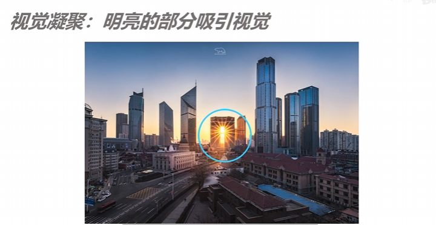
- 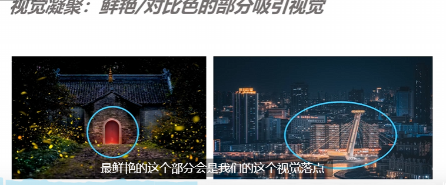
- 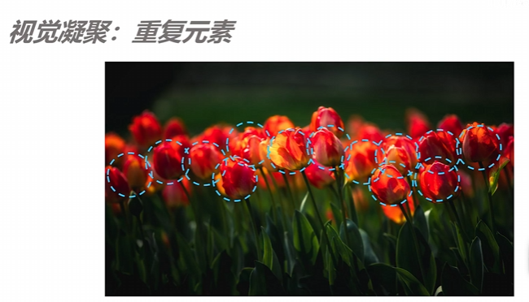
- 视觉凝聚：明暗、鲜艳暗淡、对比色、重复元素
- 视觉引导：
- 引导线
- 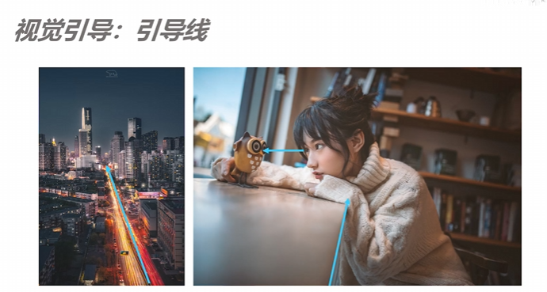
- 视线
- 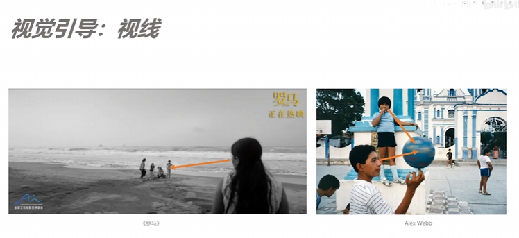
- 视觉控制
- 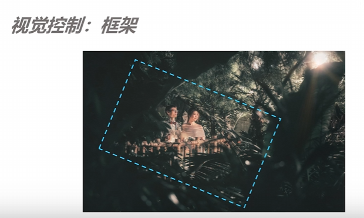
- 引导线
常用的构图技巧（要和上面的技巧综合运用）
- 三分
- 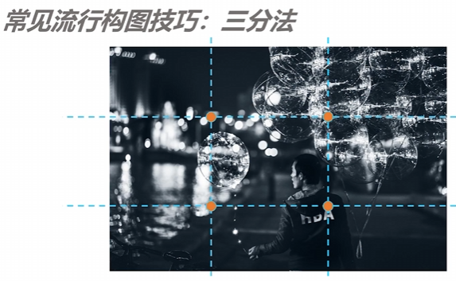
- 居中（对称） 拍摄比较庄严肃穆的物体
- 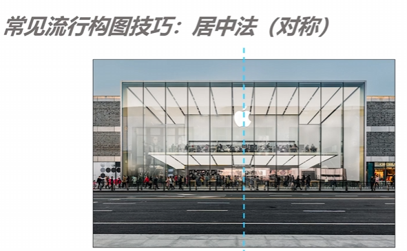
- 三角形
- 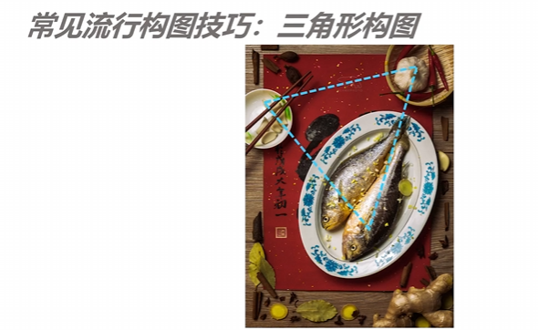
- 前中后景层次构图
- 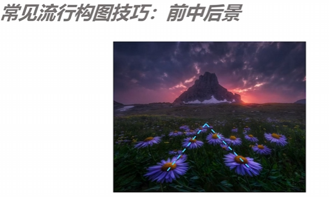
画面的平衡
- 活用三分法、对称法：根据情况调整
- 留白处点缀
- 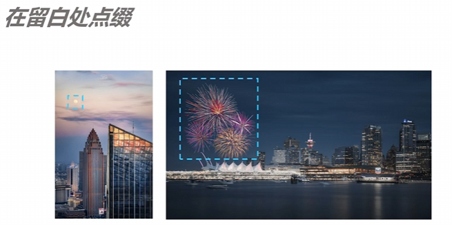
第二个教程
以下教程与图片来自： https://www.bilibili.com/video/BV1eZCzYUEKD 偏向于人像
第一阶段：形式的构图
- 居中构图：突出主题但容易平淡
- 三分法
- 对角线：有张力、有线条感，表达主体的延申感
- 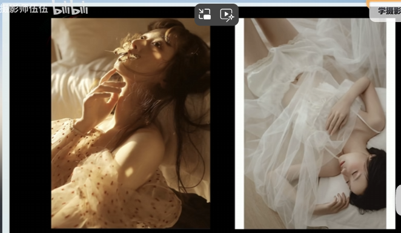
- 对称：均匀协调，稳定
- 框架构图（视觉控制）
- 引导构图：利用线条去引导，要引导去主体，不是随便引导
- 三角构图：并不局限于一个，可以拼凑多个
但是，一定不要生搬硬套！！！
以下是一些错误例子
- 盲目套用，没有突出拍摄的主体
- 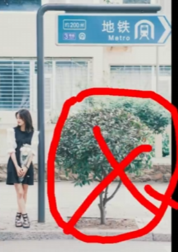
- 盲目前后景
- 前景太大：淡化主体
- 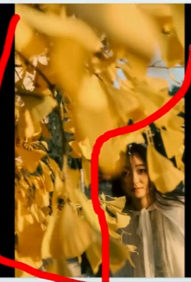

第二阶段：结构构图
-
分析画面：点线面的运用，一些元素不再是元素本身，而是引导观看主体的工具
-
根据画面内容，合理安排画面中的每个元素 而不是生搬硬套
-
当画面主体是人时，人面朝的方向和视线也是隐形的线条，合理运用能引导画面整体走向
第三阶段：忘掉构图，专注于画面内容与主题，返璞归真
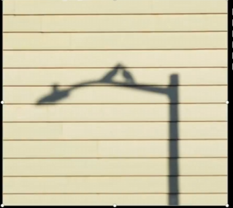
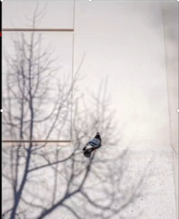
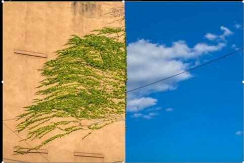
如下面图片：其主旨更加丰富，而构图不那么明显
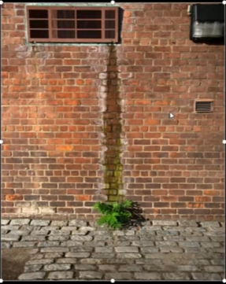
总结
说到底，构图还是服从画面与内容，照片的意义，有时候不需要华丽的构图技巧和形式，简单，真实，有意义，能让观看者产生共鸣就够了。